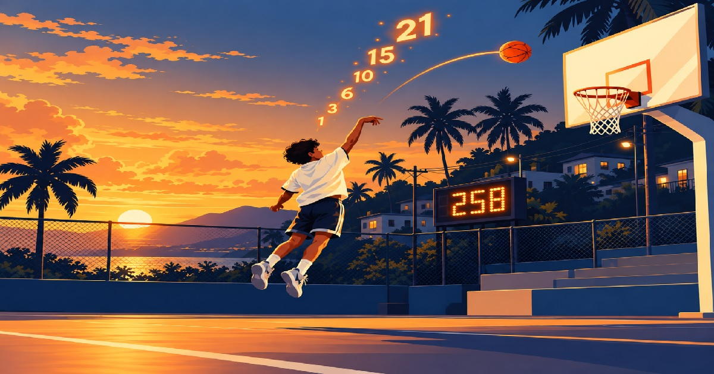

Play · then the numbers
See the whole thing in four minutes
Four one-minute quarters, your score at the buzzer, and then what it would have raised: your padrinos, your roster, and what the licence costs. Your own number, not an example.
StartA player takes his run, the game records every point, and each padrino is told what their pledge came to. Nothing to sell, no order forms, nothing to hand out afterwards. We never touch the money — the program collects its own.

No gym to book. No schedule to coordinate. No scores to enter.
Each player's points are written as he plays. Nobody enters a score, so there is nothing to chase and nothing to argue about afterwards.
No fixture to wait for, no venue to book, nothing to cancel for weather, and no season. February or July, the window is yours to set — and a program two hours away can run one without you in the room.
Anybody the program approves can take a run and bring their own padrinos — a brother, a mother, a coach, somebody who played there fifteen years ago. The licence is one price for the event, not a charge per person, so a bigger turnout costs the program nothing.
Every player has his own padrinos and his own points. One roster, and a small campaign inside it for each child.
A padrino chooses an amount per point and can cap what they will pay in total. The ceiling is applied before anyone is told a number.
When the window closes each padrino gets a single email. No payment link, and no reminders after it.
Nothing here is recorded and there is nothing to sign up for. Take a run, see your number, and the page will show you what that run would have raised for a program.
Four one-minute quarters, your score at the buzzer, and then what it would have raised: your padrinos, your roster, and what the licence costs. Your own number, not an example.
StartNo date on anybody else's calendar. You set the window, the players play inside it, and it closes on its own.
Every player gets his own link. A padrino pledges an amount for each point that player scores, and can set a ceiling on the total.
At the court or at home, on a phone. Round nine banks nine points, so the longer he lasts the faster it climbs — and the board fills up where everyone can see it.
One email to each padrino with the points scored and what their pledge came to. The program is paid directly, and that is the end of it.
Four one-minute quarters. Each quarter counts your BEST run inside it, and the four add up to one number at the buzzer. Between quarters you can practise as much as you like. An official run is the same game with five-minute quarters.
Play the scrimmageYou run the event, the report is yours to print the moment it closes, and the licence is invoiced after that. One price per event — it does not move with how much you raise, how many players run, or how many padrinos they bring in. And if the event records no pledges at all, there is no invoice.
A roster of {N} or more. One price for the whole event, however many players take a run and however many padrinos each one brings.
A small squad pays less. Everything else about the event is the same.
We manage the pledges.
You manage the proceeds.
Hooporia is strictly a pledge management software provider. Organizations independently manage all proceeds.
The game does. Each player's points are written as he plays, and the run is checked inside the database, so holding the public link is not enough to end somebody else's run. No coach has to enter anything and no padrino has to take anyone's word for it.
Yes. It runs in a browser on a phone, a tablet or a laptop. A program can run the whole thing in the gym on one afternoon, or leave the window open for a week and let families do it at home.
${A} per team for the event, or ${B} if the roster is under {N}. It is free to set up and free to run; the licence is invoiced when the event closes and due within seven days — and an event that records no pledges is never invoiced at all.
No. Hooporia never receives money from anybody. Each padrino pays the program directly, by whatever the program already uses. We record what was pledged and calculate what each pledge came to — that is the whole of it.
Once. When the window closes, each padrino gets one email with the points and their own total. There is no payment link in it and there are no reminders after it. Chasing a pledge is the program's business, not ours.
Set it up for free, pick your window, and see what the roster brings in.
Request Team RegistrationAre you a player? Your program has to run it — show your coach this page.